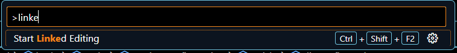

Explorer

Muestra todos los archivos del proyecto
Muestra todos los archivos del proyecto
Search o area, nos ayuda a buscar y remplazar palabras
Run and Debug (debugger) permite debugear el codigo, generando pausas y permitiendo revisar el codigo linea por linea.
Lucas Dalto tiene un video que lo explica Run and Debug
Utiliza Extensiones para persoalizar tu visualstudio. Algunas de las principales extensiones recomendadas son las siguientes:
Es una formateador de texto que nos ayuda a daarle formato al codigo sengun el lenguaje que se utilize.
Modifica la apariencia de los iconos de los archivos.
Nos ayuda con el autoacompletado que tiene por defecto Vscode.
Live Server
Nos perite correr un servidor para que se ejecute nuestra pagina web.
ident Rainbow
Nos muestra como esta identado nuestro codigo.
Auto Guardado
"Toggle Auto Sabe nos permite que nuestro codigo se quede guardado auntomaticamete"
dandole un delay en settin.json podemos controlar el retraso en el tiempo de auto guardado me gusta dejarlo lo mas corto posible, pero puede probocar errores, las propiedades se manejan en milisegundos
files.autoSaveDelay": 1000
Editor Cursor Blink
nos permite editar la animacion de cursor desde la seccion de user setting JSON
"editor.cursorBlinking": "expand"
Linked Editing
"Al activar esta opcion las etiquetas Html se borras el ambos lados"
"editor.linkedEditing": true
Enable Preview
"Al activar esta opcion de "settings.json" los archivos se abren siempre en una nueva pestaña"
"workbench.editor.enablePreview": false
files exclude
"Al activar esta opcion de "settings.json" se muestran los archivos excluidos al moneto de
importan una carpeta
Ejemplo
los archivos que terminan en .git no se importan "
"files.exclude": {
"**/.git": true,
"**/.svn": true,
"**/.hg": true,
"**/CVS": true,
"**/.DS_Store": true,
"**/Thumbs.db": true
}
Terminal Integrated
permite cambiar el tamaño de la fuente de la terminal integrada
"terminal.integrated.fontSize": 11
Editor Fobnt Size
permite cambiar el tamaño de la fuente del editor vscode
"editor.fontSize": 20
Tab Size
cambia el numero de espacios en cadfa tabulacion
"editor.tabSize": 4
Da un salto de linea automatico cuando el texto alcanza el borde de la ventana de vscode. Presionar ctrl + shif + p y buscar "toogle word wrap" para activarlo
Ejemplo antes
Ejemplo despues
Guardad Guarda los cmabios hecho en el editor
ctrl + s
Abrir abre un archivo
ctrl + o
Abrir abre una nueva instacia o nueva ventana
ctrl + n
cerrar cierra un archivo
ctrl + w
buscar busca en el buscador de archivos
ctrl + shif + f
paleta de comandos abre la paleta de comandos
ctrl + p
copiar una linea permite copiar toda la liena seleccionada
shif + alt + (arriba o abajo)
mover una linea permite mover toda la liena seleccionada
alt + (arriba o abajo)
definicion retorna la definicion de alguna propiedad del lenguaje
f12
shif + f12
Remplazar permite remplazar todas las palabras iguales dell codigo
ctrl + shif + l
cursores crea multiples cursores
ctrl + alt + (arriba o abajo)
alt + (selecionar con el mouse)
desplazatabula toda una linea ala izquierda o ala derecha
ctrl + ´´
ctrl +
son las teclas despues del 0
'' para dezplazar ala izquierda
¿ para desplzar ala derecha
cerrar segmentocierra todo un segmento de codigo
ctrl + ´´
ctrl +
son las teclas despues del 0
'' para cerrar
¿ para abrir
GO TO LINE nos manda ala linea especificada
ctrl + g
/*Forma de colocar codigo en pagina web*/